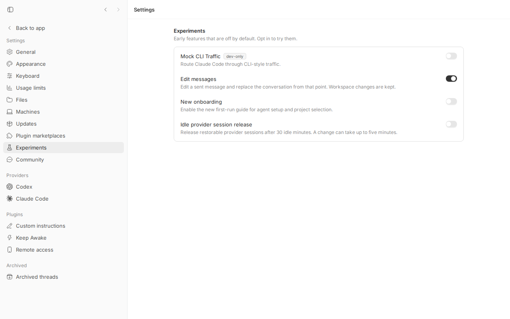
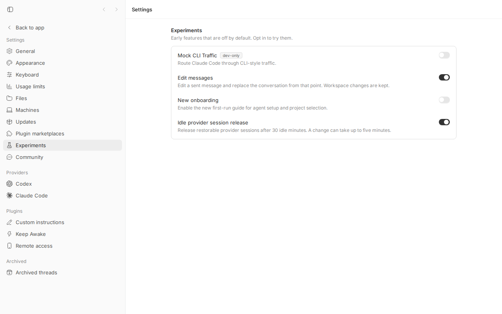

#1604 · Idle agent processes are never reclaimed for non-Codex providers
TL;DR
Every bb thread that runs on Claude Code (and Pi, and ACP agents) keeps its agent OS process alive for as long as the host daemon runs, even after the thread has been idle for hours. Only Codex threads get their process released after 30 idle minutes. Each retained claude process holds roughly 300-350 MB RSS on this machine, so a busy user quietly accumulates gigabytes of idle agents. The cause is a provider gate in the idle-session reaper: findReapableIdleProviderSession in packages/agent-runtime/src/runtime.ts returns null for any thread whose provider is not codex unless the providerSessionReaping experiment is on, and that experiment defaults to false. The generalized reaper was added ~2.5 h after the issue was filed (PR #1606, commit 3bc9ce54b) but only behind that off-by-default toggle, so an ordinary installation at the base commit still exhibits exactly the reported behavior. I reproduced it live (twice, once in the original investigation and once during revision): with defaults, a Codex thread's process was reaped 57 s after going idle (timers shortened to 45 s / 15 s for the demo) while the Claude Code thread's claude process survived ~17 sweeps at more than 5x the threshold; flipping the experiment on released it on the next sweep, and the next turn resumed the same Claude session with history intact.
Claims vs findings
| Claim (from issue) | Status | Evidence |
|---|---|---|
| The reaper only reaps Codex; Claude Code and ACP retain one process per idle thread indefinitely. | Verified (default config) | Unit repro fails on main: reapIdleProviderSessions({idleForMs: 30min, providerSessionReapingEnabled:false}) returns [] for an idle restorable claude-code thread and [thread] for codex. Live: claude pid 1648559 survived 305 s (~260 s idle; threshold 45 s, sweep 15 s, i.e. ~17 sweeps) while the codex process was released at 57 s idle; the daemon log shows only the codex reap. |
Root cause is if (!isThreadScopedCodexProcess(proc)) continue; at runtime.ts:2205 plus the gate in findReapableIdleProviderSession at runtime.ts:707. | Verified (line numbers moved) | At base commit the two gates are at packages/agent-runtime/src/runtime.ts:813-823 and packages/agent-runtime/src/runtime.ts:2404-2415. Both are now conditional on providerSessionReapingEnabled; with the default false they behave exactly as described. |
Both gates landed in 2a84ecfdc (#130) which scoped only Codex. | Verified | Comment block at packages/agent-runtime/src/runtime.ts:462-469 ("Codex runs one provider process per thread ... the pre-experiment idle reap keys off isThreadScopedCodexProcess") and git log -S. |
Idle tracking (observeProviderSessionIdleState) is already provider-agnostic. | Verified | packages/agent-runtime/src/runtime.ts:782-799 keys on generic turn/started, turn/completed, provider/error; start/resume also mark idle (lines 1642, 1971). |
| Claude Code sessions survive losing their process and resume with in-agent history. | Verified (graceful path) | After the reap the next turn spawned a new claude pid (1719138) and answered "What was my previous message?" with "Reply only with ok."; the events table shows one provider_thread_id spanning both turns. |
| Nothing calls the manual release verb (#1573/#1584) for an ordinary thread that goes idle. | Verified | #1584 merged (1c3f3eff): thread.stop on an idle thread now releases the runtime, but only on explicit stop. The scheduled reaper is the only automatic caller and it is gated as above. |
| ~215 MB per idle agent, 5.2 GB across 24 idle agents, event-loop stalls, swap. | Unverified (macOS measurements) | Cannot re-measure the reporter's host. On this Linux box a fresh idle claude process shows 319-349 MB RSS (see census); the mechanism is consistent with the claim. |
ACP restorability depends on agentCapabilities.loadSession; must gate on it. | Verified / already done | plugins/provider-acp/src/bridge/bridge.ts:1785 and line 2311 report sessionRestorable: session.supportsLoadSession; the experiment path only considers runtimeConfig.sessionRestorable threads. |
| Non-Codex process keys are shared, so forgetting thread state before shutdown is unsafe. | Verified concern, handled | The experiment path uses runtime.stopThread (packages/agent-runtime/src/runtime.ts:2160-2203), which sends thread/stop to the bridge (bridge closes only that thread's SDK child), then releaseIdleProviderProcess shuts a process down only if it is a thread-scoped Codex process with zero threads. Shared bridge processes stay up; the memory-heavy claude child is what goes away. |
Environment
| bb source | 16ceb3a540f81c1189efaffb27a39b1d9443abf5 (main, 2026-08-18) with the reap timers shortened for the live demo (see patch below; not needed for the unit repro) |
| OS / node | Linux 7.0.0-29-generic x86_64 · node v24.18.0 (dev launcher may select node 22) |
| Providers | Claude Code CLI 2.1.234, codex-cli 0.147.0 |
| Dev instance | App :18265 · Server :26265 · Host daemon :34265 · data dir /home/USER/.bb-dev/projects-bb-.claude-worktrees-wf_debcf606-e4a-35-374641e1c5d8 (printed by scripts/bb-dev-app current; the daemon log is <data dir>/logs/host-daemon.1.log). An earlier run of the same procedure on a sibling instance (:25677) gave the same result. |
| Project | proj_4kkaejj9fe "qa" on /tmp/bb-1604-repo, host host_gekqex8vg6 (all ids below are from this run; yours will differ) |
| Threads | thr_rzkkwjnmu5 (claude-code) · thr_797gima4ej (codex) |
Minimal reproduction
A. Unit-level (fails on main, no dev instance needed)
- Save the test below as
packages/agent-runtime/src/issue-1604.repro.test.ts(copy in1604/repro/issue-1604.repro.test.ts). - Run from
packages/agent-runtime:pnpm exec vitest run src/issue-1604.repro.test.ts - Expected: all three tests pass (an idle restorable Claude Code session is released like a Codex one).
Actual: the first test fails:expected [] to deeply equal [ ObjectContaining{providerId:"claude-code"} ]. The Codex baseline passes; the opt-in (providerSessionReapingEnabled: true) variant passes.
/**
* Repro for get-bb/bb#1604: idle agent sessions are never reclaimed for
* non-Codex providers under the daemon's DEFAULT policy.
*
* The daemon calls `reapIdleProviderSessions` every 5 minutes with
* `idleForMs: 30min` and `providerSessionReapingEnabled` = the value of the
* `providerSessionReaping` experiment, whose default is `false`
* (packages/domain/src/experiments.ts). This test drives the runtime the way
* the daemon does with the default policy and asserts what a user expects:
* an idle, restorable Claude Code-shaped session is released.
*
* On main (16ceb3a54) the first assertion FAILS: `reapedSessions` is `[]`
* because `findReapableIdleProviderSession` rejects every non-Codex thread
* when the experiment is off. The second `it` shows the Codex baseline for
* contrast (it passes), and the third shows the opt-in path (it passes).
*/
import { mkdtempSync, rmSync, writeFileSync } from "node:fs";
import { tmpdir } from "node:os";
import { join } from "node:path";
import { afterEach, beforeEach, describe, expect, it } from "vitest";
import { createAgentRuntimeWithAdapters } from "./runtime.js";
import {
createFakeAdapter,
fullRuntimeOptions,
} from "./test/runtime-test-harness.js";
// Same idle policy the daemon uses (apps/host-daemon/src/app.ts:66).
const IDLE_PROVIDER_SESSION_REAP_AFTER_MS = 30 * 60 * 1000;
function writeRestorableProviderScript(scriptPath: string): void {
writeFileSync(
scriptPath,
`const readline = require("readline");
const rl = readline.createInterface({ input: process.stdin });
process.on("SIGTERM", () => process.exit(0));
function send(m) { process.stdout.write(JSON.stringify(m) + "\\n"); }
rl.on("line", (line) => {
const message = JSON.parse(line);
const p = message.params ?? {};
if (message.method === "initialize" || message.method === "skills/configure") {
send({ jsonrpc: "2.0", id: message.id, result: { ok: true } });
return;
}
if (message.method === "thread/start") {
const providerThreadId = "prov-" + p.threadId;
// Every real bridge (claude-code, codex, pi, ACP w/ loadSession) reports
// sessionRestorable: true on thread/start.
send({ jsonrpc: "2.0", id: message.id, result: { providerThreadId, sessionRestorable: true } });
send({ jsonrpc: "2.0", method: "thread/identity", params: { threadId: p.threadId, providerThreadId } });
return;
}
if (message.method === "thread/stop") {
send({ jsonrpc: "2.0", id: message.id, result: { ok: true } });
return;
}
send({ jsonrpc: "2.0", id: message.id, result: { ok: true } });
});`,
);
}
describe("issue #1604: idle non-Codex sessions under the default reap policy", () => {
let tmpDir: string;
beforeEach(() => {
tmpDir = mkdtempSync(join(tmpdir(), "bb-1604-"));
});
afterEach(() => {
rmSync(tmpDir, { recursive: true, force: true });
});
async function startIdleThread(providerId: string) {
const scriptPath = join(tmpDir, `${providerId}-provider.cjs`);
writeRestorableProviderScript(scriptPath);
const runtime = createAgentRuntimeWithAdapters({
workspacePath: tmpDir,
onEvent: () => {},
onToolCall: async () => ({
contentItems: [{ type: "inputText", text: "ok" }],
success: true,
}),
adapterFactory: () => ({
...createFakeAdapter(scriptPath),
displayName: providerId,
id: providerId,
}),
});
await runtime.startThread({
environmentId: "env-1",
threadId: `t-${providerId}`,
projectId: "p1",
providerId,
options: fullRuntimeOptions,
});
return runtime;
}
it("BUG: a Claude Code session idle for > 30 min is NOT released with the default policy", async () => {
const runtime = await startIdleThread("claude-code");
try {
const result = await runtime.reapIdleProviderSessions({
idleForMs: IDLE_PROVIDER_SESSION_REAP_AFTER_MS,
// Pretend the daemon sweep runs 31 minutes after the thread went idle.
nowMs: Date.now() + IDLE_PROVIDER_SESSION_REAP_AFTER_MS + 60_000,
providerSessionReapingEnabled: false, // defaultExperiments.providerSessionReaping
});
// Expected by the issue: the idle claude-code session is released.
// Actual on main: [] — nothing is ever reaped for non-Codex providers.
expect(result.reapedSessions).toEqual([
expect.objectContaining({ providerId: "claude-code", threadId: "t-claude-code" }),
]);
expect(runtime.hasThread("t-claude-code")).toBe(false);
} finally {
await runtime.shutdown();
}
});
it("baseline: the same idle session IS released when the provider is codex", async () => {
const runtime = await startIdleThread("codex");
try {
const result = await runtime.reapIdleProviderSessions({
idleForMs: IDLE_PROVIDER_SESSION_REAP_AFTER_MS,
nowMs: Date.now() + IDLE_PROVIDER_SESSION_REAP_AFTER_MS + 60_000,
providerSessionReapingEnabled: false,
});
expect(result.reapedSessions).toEqual([
expect.objectContaining({ providerId: "codex", threadId: "t-codex" }),
]);
expect(runtime.hasThread("t-codex")).toBe(false);
} finally {
await runtime.shutdown();
}
});
it("opt-in: with the providerSessionReaping experiment on, claude-code IS released", async () => {
const runtime = await startIdleThread("claude-code");
try {
const result = await runtime.reapIdleProviderSessions({
idleForMs: IDLE_PROVIDER_SESSION_REAP_AFTER_MS,
nowMs: Date.now() + IDLE_PROVIDER_SESSION_REAP_AFTER_MS + 60_000,
providerSessionReapingEnabled: true,
});
expect(result.reapedSessions).toEqual([
expect.objectContaining({ providerId: "claude-code", threadId: "t-claude-code" }),
]);
expect(runtime.hasThread("t-claude-code")).toBe(false);
} finally {
await runtime.shutdown();
}
});
});
Output (vitest-output.txt):
RUN v4.1.1 /home/USER/projects/bb/.claude/worktrees/wf_debcf606-e4a-13/packages/agent-runtime
❯ |@bb/agent-runtime| src/issue-1604.repro.test.ts (3 tests | 1 failed) 81ms
× BUG: a Claude Code session idle for > 30 min is NOT released with the default policy 31ms
⎯⎯⎯⎯⎯⎯⎯ Failed Tests 1 ⎯⎯⎯⎯⎯⎯⎯
FAIL |@bb/agent-runtime| src/issue-1604.repro.test.ts > issue #1604: idle non-Codex sessions under the default reap policy > BUG: a Claude Code session idle for > 30 min is NOT released with the default policy
AssertionError: expected [] to deeply equal [ ObjectContaining{…} ]
- Expected
+ Received
- [
- ObjectContaining {
- "providerId": "claude-code",
- "threadId": "t-claude-code",
- },
- ]
+ []
❯ src/issue-1604.repro.test.ts:107:37
105| // Expected by the issue: the idle claude-code session is releas…
106| // Actual on main: [] — nothing is ever reaped for non-Codex pro…
107| expect(result.reapedSessions).toEqual([
| ^
108| expect.objectContaining({ providerId: "claude-code", threadId:…
109| ]);
⎯⎯⎯⎯⎯⎯⎯⎯⎯⎯⎯⎯⎯⎯⎯⎯⎯⎯⎯⎯⎯⎯⎯⎯[1/1]⎯
Test Files 1 failed (1)
Tests 1 failed | 2 passed (3)
Start at 04:38:31
Duration 1.01s (transform 540ms, setup 0ms, import 826ms, tests 81ms, environment 0ms)
B. Live (real Claude Code + Codex processes)
The production timers are 30 min idle / 5 min sweep. To watch it happen in minutes I shortened them in my worktree only (timing-patch.diff); the logic under test is untouched:
diff --git a/apps/host-daemon/src/app.ts b/apps/host-daemon/src/app.ts
index 3b5cac969..f5f160272 100644
--- a/apps/host-daemon/src/app.ts
+++ b/apps/host-daemon/src/app.ts
@@ -63,8 +63,8 @@ interface SessionState {
}
const INTERACTIVE_INTERRUPT_RETRY_DELAY_MS = 1_000;
-const IDLE_PROVIDER_SESSION_REAP_AFTER_MS = 30 * 60 * 1000;
-const IDLE_PROVIDER_SESSION_REAP_INTERVAL_MS = 5 * 60 * 1000;
+const IDLE_PROVIDER_SESSION_REAP_AFTER_MS = 45 * 1000; // REPRO #1604: was 30 * 60 * 1000
+const IDLE_PROVIDER_SESSION_REAP_INTERVAL_MS = 15 * 1000; // REPRO #1604: was 5 * 60 * 1000
const RUNTIME_SHELL_ENV_REFRESH_TTL_MS = 10_000;
type RuntimeShellEnv = NonNullable<AgentRuntimeOptions["shellEnv"]>;
Everything below was run from the repo root of a fresh worktree at the base commit. Ids (host_…, proj_…, thr_…, pids) are from this run - substitute your own. Note that eval "$(scripts/bb-dev-app env)" exports both BB_SERVER_URL and BB_HOST_DAEMON_PORT; if only the server URL is set, thread spawn resolves the host id from the default-port daemon and fails with HTTP 404: Host not found.
- Apply the timing patch, build, start your own instance and load its env:
git apply /tmp/bb-reports/issues/1604/repro/timing-patch.diff pnpm exec turbo run build --filter=@bb/host-daemon scripts/bb-dev-app current # prints App/Server/Host daemon URLs and the data dir eval "$(scripts/bb-dev-app env)" # exports BB_SERVER_URL and BB_HOST_DAEMON_PORT DATA_DIR=/home/USER/.bb-dev/projects-bb-.claude-worktrees-wf_debcf606-e4a-35-374641e1c5d8 # the "Data dir:" line printed above LOG=$DATA_DIR/logs/host-daemon.1.log
- Confirm the default experiment state (wait ~20 s after start for the server to come up):
$ curl -s $BB_SERVER_URL/api/v1/system/config | jq -c .experiments {"claudeCodeMockCliTraffic":false,"editMessages":true,"newOnboarding":false,"providerSessionReaping":false} - Create a scratch git repo, look up your host id, and create a project on it:
$ mkdir -p /tmp/bb-1604-repo && cd /tmp/bb-1604-repo && git init -q -b main && echo "# 1604" > README.md && git add . && git commit -qm init && cd - $ pnpm --silent bb:dev machine list Name ID Status Last seen ---- --------------- --------- --------- HOST host_gekqex8vg6 connected just now $ HOST_ID=$(pnpm --silent bb:dev machine list --json | jq -r '.[0].id') $ curl -s -X POST $BB_SERVER_URL/api/v1/projects -H 'content-type: application/json' \ -d "{\"name\":\"qa\",\"source\":{\"type\":\"local_path\",\"path\":\"/tmp/bb-1604-repo\",\"hostId\":\"$HOST_ID\"}}" | jq -c '{id,name}' {"id":"proj_4kkaejj9fe","name":"qa"} - Spawn one thread per provider (tiny prompts; the
--jsonoutput includes the thread id) and wait until both are idle:$ date -u Tue Aug 18 05:27:05 AM UTC 2026 $ pnpm --silent bb:dev thread spawn --project proj_4kkaejj9fe --provider claude-code --permission-mode accept-edits --title "1604 claude" --prompt "Reply only with ok." --json | jq -c '{id}' {"id":"thr_rzkkwjnmu5"} $ pnpm --silent bb:dev thread spawn --project proj_4kkaejj9fe --provider codex --permission-mode accept-edits --title "1604 codex" --prompt "Reply only with ok." --json | jq -c '{id}' {"id":"thr_797gima4ej"} $ pnpm --silent bb:dev thread list --project proj_4kkaejj9fe # ~40 s later ID Project Status -------------- --------------- ------------ thr_797gima4ej proj_4kkaejj9fe idle -------------- --------------- ------------ thr_rzkkwjnmu5 proj_4kkaejj9fe idle - Census the agent processes by the
BB_THREAD_IDin their environment (census.sh; Linux only - it reads/proc; the header comment gives the macOSps ewwequivalent) and grep the daemon log for the reap line. The log is pino JSON; thejqfilter below only reshapes it for readability - the raw lines are in the appendix.$ date -u; /tmp/bb-reports/issues/1604/repro/census.sh thr_rzkkwjnmu5 thr_797gima4ej Tue Aug 18 05:27:59 AM UTC 2026 1648559 thr_rzkkwjnmu5 344 MB /home/USER/.local/bin/claude --output-format stream-json --verbose --input-format stream $ date -u; /tmp/bb-reports/issues/1604/repro/census.sh thr_rzkkwjnmu5 thr_797gima4ej Tue Aug 18 05:28:32 AM UTC 2026 1648559 thr_rzkkwjnmu5 346 MB /home/USER/.local/bin/claude --output-format stream-json --verbose --input-format stream $ grep '"Reaped idle provider sessions"' $LOG | jq -c '{time:(.time/1000|todate),sessions}' {"time":"2026-08-18T05:28:17Z","sessions":[{"environmentId":"env_z7idv6edx4","idleForMs":57081,"providerId":"codex","threadId":"thr_797gima4ej"}]} $ date -u; /tmp/bb-reports/issues/1604/repro/census.sh thr_rzkkwjnmu5 thr_797gima4ej; ps -o pid,etimes,rss -p 1648559 Tue Aug 18 05:32:15 AM UTC 2026 1648559 thr_rzkkwjnmu5 328 MB /home/USER/.local/bin/claude --output-format stream-json --verbose --input-format stream PID ELAPSED RSS 1648559 305 336576 $ grep -c '"Reaped idle provider sessions"' $LOG 1Expected: both idle sessions released after the 45 s threshold. Actual: Codex released at 57 s idle (itscodex app-serverchild is gone; it never shows up in the census because the codex process does not carryBB_THREAD_IDin its env - watch it withps -eo pid,etimes,args | grep 'codex app-server'if you want to see it die). The Claude Code process is still alive at 305 s (~260 s idle, ~17 sweeps, >5x threshold) and noclaude-codereap line ever appears. With production timers this is 30 minutes / forever. - Control: turn the opt-in experiment on and watch the very next sweep release it, then prove the session resumes:
$ date -u; pnpm --silent bb:dev settings experiment providerSessionReaping true Tue Aug 18 05:32:21 AM UTC 2026 providerSessionReaping updated $ curl -s $BB_SERVER_URL/api/v1/system/config | jq -c .experiments {"claudeCodeMockCliTraffic":false,"editMessages":true,"newOnboarding":false,"providerSessionReaping":true} $ date -u; /tmp/bb-reports/issues/1604/repro/census.sh thr_rzkkwjnmu5 # (no output: pid 1648559 is gone) Tue Aug 18 05:32:33 AM UTC 2026 $ grep '"Reaped idle provider sessions"' $LOG | jq -c '{time:(.time/1000|todate),sessions}' {"time":"2026-08-18T05:28:17Z","sessions":[{"environmentId":"env_z7idv6edx4","idleForMs":57081,"providerId":"codex","threadId":"thr_797gima4ej"}]} {"time":"2026-08-18T05:32:32Z","sessions":[{"environmentId":"env_z7idv6edx4","idleForMs":316639,"providerId":"claude-code","threadId":"thr_rzkkwjnmu5"}]} $ pnpm --silent bb:dev thread tell thr_rzkkwjnmu5 "What was my previous message to you? Quote it exactly, nothing else." Thread thr_rzkkwjnmu5 steered $ pnpm --silent bb:dev thread wait thr_rzkkwjnmu5 Thread thr_rzkkwjnmu5 reached status idle. $ /tmp/bb-reports/issues/1604/repro/census.sh thr_rzkkwjnmu5 1719138 thr_rzkkwjnmu5 357 MB /home/USER/.local/bin/claude --output-format stream-json --verbose --input-format stream # new pidThread log after resume (pnpm --silent bb:dev thread log thr_rzkkwjnmu5, saved asthread-log-after-resume.txt):── User ──────────────────────────────────────────────────── Reply only with ok. ── Provisioned thread ────────────────────────────────────── Preparing workspace Using workspace: /tmp/bb-1604-repo Using branch: main (d24c206) ── Assistant ─────────────────────────────────────────────── ok ── User ──────────────────────────────────────────────────── What was my previous message to you? Quote it exactly, nothing else. ── Assistant ─────────────────────────────────────────────── "Reply only with ok."
Same provider session across both turns (events query; the empty first row is pre-identity provisioning events):$ sqlite3 -header -column "file:$DATA_DIR/bb.db?mode=ro" "SELECT provider_thread_id, MIN(sequence) min_seq, MAX(sequence) max_seq, COUNT(*) n FROM events WHERE thread_id='thr_rzkkwjnmu5' GROUP BY provider_thread_id" provider_thread_id min_seq max_seq n ------------------------------------ ------- ------- -- 1 17 7 92637946-e901-4757-8098-0ff5d595c636 7 28 20 - Clean up:
pnpm dev:stop, thengit checkout apps/host-daemon/src/app.tsto drop the timing patch.


bb settings experiment providerSessionReaping true. On the next sweep (11 s later in this run) the daemon released the idle Claude Code session.Root cause
The daemon runs one scheduled sweep (apps/host-daemon/src/app.ts:157-210) every 5 minutes with idleForMs = 30 min and providerSessionReapingEnabled read from the server's /internal/runtime-policy, which is simply getExperiments(db).providerSessionReaping (apps/server/src/internal/session.ts:40-44). That experiment defaults to false (packages/domain/src/experiments.ts:30-35):
export const defaultExperiments: Experiments = {
claudeCodeMockCliTraffic: false,
editMessages: true,
newOnboarding: false,
providerSessionReaping: false,
};
Inside the runtime, candidate selection has an explicit provider gate (packages/agent-runtime/src/runtime.ts:813-823):
const runtimeConfig = threadRuntimeConfigs.get(args.threadId);
if (
!runtimeConfig ||
// The experiment extends release to every restorable provider. It does
// not gate release: Codex idle sessions are released without it ...
(args.providerSessionReapingEnabled
? !runtimeConfig.sessionRestorable
: runtimeConfig.providerId !== CODEX_PROVIDER_ID)
) {
return null;
}
and a second one on the process (packages/agent-runtime/src/runtime.ts:2404-2415): with the experiment off a candidate is dropped unless isThreadScopedCodexProcess(proc), which can only be true for Codex because only Codex gets a per-thread process key (packages/agent-runtime/src/runtime.ts:470-478). So with defaults, the idle timestamps recorded for every provider by observeProviderSessionIdleState are never acted on for anything but Codex, and the per-thread claude child that the Claude Code bridge spawns lives until the daemon exits, the thread is stopped explicitly (#1584), or the environment is cleaned up (which destroys the workspace).
History. The Codex-only shape came from #130 (2a84ecfdc, per-thread Codex processes). PR #1606 (3bc9ce54b, merged 2026-08-14 17:34, ~2.5 h after this issue was filed) added everything the issue asks for in point 1: restorability reported per session on thread/start by every bridge (Claude Code always true, ACP supportsLoadSession, Codex/Pi true), release via stopThread, and protection for open background work / agents / monitors. It deliberately shipped default-off. Nothing implements points 2 (demand-driven eviction at ensureEnvironment) or 3 (bounded idle pool / memory-pressure trigger).
Deeper issue. Even with the experiment on, reclamation is time-based only: a burst of subagents that all go idle is retained in full for 30 minutes regardless of host memory. That residual concern (issue points 2-3) is not addressed anywhere on main.
Proposed fix (first principles)
- Make restorable-session release the default. Flip
defaultExperiments.providerSessionReapingtotrueinpackages/domain/src/experiments.ts(or, cleaner, remove the experiment and the twoproviderSessionReapingEnabled ? ... : ...branches so the reaper is simply "restorable + idle + no open work"). Updatedocs/configuration.md, the Settings copy inapps/app/src/views/SettingsView.tsx, and the tests that pin the default (packages/db/test/experiments.test.ts,apps/server/test/system/experiments.test.ts,runtime.process-lifecycle.test.ts"only when the experiment is on"). Flipping the default is not a wire change. Removing the field fromHostDaemonRuntimePolicywould be, and would need aHOST_DAEMON_PROTOCOL_VERSIONbump. - Risks to check before flipping: (a) ACP agents that report
supportsLoadSessionbut restore poorly - the gate is only as good as the agent's claim; (b) any per-session in-bridge state that does not survive resume (Claude Code one-off permission grants held in the bridge session, plan-mode state) -handleThreadResumerebuilds fromparams, so server-owned settings survive, but transient in-session grants may not; (c) UI surprise: the thread's next turn pays a cold start. These are the same trade-offs Codex users have had since #130. - Optional follow-up (issue points 2-3): in
RuntimeManager.ensureEnvironment, before creating a new runtime, callreapIdleProviderSessions({idleForMs: 0})across environments when the number of idle restorable sessions exceeds a static cap (e.g.max(2, floor(totalmem/2GiB))). Keep it static and portable first; PSI-based triggers can come later.
PR review
No open PRs are linked to this issue. The relevant merged PR is #1606 (opt-in experiment); its runtime path was exercised above and behaved correctly (release on the next sweep and clean resume in both live runs; in the first run I also let it sit and observed a second reap 53 s after the resumed session went idle again).
Related issues
- #1606 Add provider session release experiment (merged; the opt-in mitigation)
- #1573 / #1584 Release agent runtimes on thread stop (merged; manual release verb)
- #1131 Synchronous SQLite on the event loop (the stalls memory pressure amplifies)
- #1363 Provider processes need one host-daemon lease owner tied to active turns
- #130 Run Codex app-server per thread (origin of the Codex-only gate)
Appendix
Daemon reap log lines, verbatim (jsonl)
{"level":30,"time":1787030897429,"component":"host-daemon","serverUrl":"http://127.0.0.1:26265","count":1,"sessions":[{"environmentId":"env_z7idv6edx4","idleForMs":57081,"providerId":"codex","threadId":"thr_797gima4ej"}],"msg":"Reaped idle provider sessions"}
{"level":30,"time":1787031152763,"component":"host-daemon","serverUrl":"http://127.0.0.1:26265","count":1,"sessions":[{"environmentId":"env_z7idv6edx4","idleForMs":316639,"providerId":"claude-code","threadId":"thr_rzkkwjnmu5"}],"msg":"Reaped idle provider sessions"}
Process census script (census.sh, Linux only)
#!/usr/bin/env bash
# Linux only (reads /proc). Lists every process whose environment carries
# BB_THREAD_ID (i.e. an agent process spawned by the bb host daemon for a
# thread), with RSS in MB. Processes you cannot read are skipped silently.
# On macOS use instead: ps -eo pid,etime,rss,command | grep -E 'claude|codex app-server' | grep -v grep
# and `ps eww -o command -p <pid> | tr ' ' '\n' | grep BB_THREAD_ID` to map pid -> thread.
# Usage: census.sh [thread-id-substring ...]
for pid in $(ls /proc | grep -E '^[0-9]+$'); do
envf=/proc/$pid/environ
[ -r "$envf" ] || continue
tid=$(tr '\0' '\n' < "$envf" 2>/dev/null | grep '^BB_THREAD_ID=' | cut -d= -f2)
[ -n "$tid" ] || continue
if [ $# -gt 0 ]; then
match=0; for want in "$@"; do case "$tid" in *"$want"*) match=1;; esac; done
[ $match = 1 ] || continue
fi
rss_kb=$(awk '/VmRSS/{print $2}' /proc/$pid/status 2>/dev/null)
cmd=$(tr '\0' ' ' < /proc/$pid/cmdline 2>/dev/null | cut -c1-90)
printf '%-8s %-16s %6s MB %s\n' "$pid" "$tid" "$((rss_kb/1024))" "$cmd"
done 2>/dev/null
Commands run
gh issue view 1604 --repo get-bb/bb --json ...
pnpm install --frozen-lockfile --prefer-offline
pnpm exec turbo run build
cp /tmp/bb-reports/issues/1604/repro/issue-1604.repro.test.ts packages/agent-runtime/src/ && cd packages/agent-runtime && pnpm exec vitest run src/issue-1604.repro.test.ts
git apply /tmp/bb-reports/issues/1604/repro/timing-patch.diff
pnpm exec turbo run build --filter=@bb/host-daemon
scripts/bb-dev-app current
eval "$(scripts/bb-dev-app env)"
curl -s $BB_SERVER_URL/api/v1/system/config | jq -c .experiments
mkdir -p /tmp/bb-1604-repo && cd /tmp/bb-1604-repo && git init -q -b main && echo "# 1604" > README.md && git add . && git commit -qm init
HOST_ID=$(pnpm --silent bb:dev machine list --json | jq -r '.[0].id')
curl -s -X POST $BB_SERVER_URL/api/v1/projects -H 'content-type: application/json' -d "{\"name\":\"qa\",\"source\":{\"type\":\"local_path\",\"path\":\"/tmp/bb-1604-repo\",\"hostId\":\"$HOST_ID\"}}"
pnpm --silent bb:dev thread spawn --project proj_4kkaejj9fe --provider claude-code --permission-mode accept-edits --title "1604 claude" --prompt "Reply only with ok." --json
pnpm --silent bb:dev thread spawn --project proj_4kkaejj9fe --provider codex --permission-mode accept-edits --title "1604 codex" --prompt "Reply only with ok." --json
pnpm --silent bb:dev thread list --project proj_4kkaejj9fe
/tmp/bb-reports/issues/1604/repro/census.sh thr_rzkkwjnmu5 thr_797gima4ej (repeated)
grep '"Reaped idle provider sessions"' $DATA_DIR/logs/host-daemon.1.log
pnpm --silent bb:dev settings experiment providerSessionReaping true
pnpm --silent bb:dev thread tell thr_rzkkwjnmu5 "What was my previous message to you? Quote it exactly, nothing else."
pnpm --silent bb:dev thread wait thr_rzkkwjnmu5
pnpm --silent bb:dev thread log thr_rzkkwjnmu5
sqlite3 -header -column "file:$DATA_DIR/bb.db?mode=ro" "SELECT provider_thread_id, MIN(sequence), MAX(sequence), COUNT(*) FROM events WHERE thread_id='thr_rzkkwjnmu5' GROUP BY provider_thread_id"
pnpm dev:stop
Notes
- The unit repro passes/fails independently of the timing patch; the patch only exists so the live demo takes minutes instead of 30+.
- Real turns were sent to Claude Code (2) and Codex (1), all with tiny prompts.
- Priority/Effort GitHub project fields were not readable through
gh issue view; only thehostlabel is present. - Note:
bb thread tellfrom inside another bb thread inheritsBB_THREAD_IDand fails with "Sender thread is invalid"; unset it first. - Note:
pnpm bb:dev … --jsonprints a turbo preamble to stdout; usepnpm --silent bb:dev … --json(ornode packages/scripts/dist/commands/run-cli.js …) when piping tojq. - Note:
bb thread spawnresolves the host id from the local daemon atBB_HOST_DAEMON_PORT; without that variable it asks the default-port (user's real) daemon and the dev server answersHTTP 404: Host not found.eval "$(scripts/bb-dev-app env)"sets it.
Verification
An independent verifier followed this report on a pristine 16ceb3a54 tree and reproduced both parts: the unit repro failed with the identical assertion (expected [] to deeply equal [ ObjectContaining{providerId: claude-code, …} ] at issue-1604.repro.test.ts:107), and the live run on their own instance (:11085/:19085/:27085) showed the codex session reaped at 55.7 s idle while the claude-code process (354 MB RSS) survived 191 s idle with zero claude-code reap lines; enabling providerSessionReaping produced a reap 16 s later and the next turn resumed the same provider session. All root-cause code claims and the git log -S history were re-checked and confirmed, and nothing after the base commit changes the behaviour. The verifier flagged that section B was not self-contained (project-creation curl referenced "the brief", host/project ids hardcoded without a substitution note, daemon log path elided, census.sh Linux-only and noisy, and inline log lines reshaped without showing the transformation).
What changed in this revision: section B was re-run end to end on a fresh instance (:18265/:26265/:34265, project proj_4kkaejj9fe, threads thr_rzkkwjnmu5/thr_797gima4ej) with every command written out - scratch repo creation, machine list for the host id, the full project-creation curl, --silent for JSON piping, the concrete data-dir/log path, and the jq reshaping filter shown next to its output. All outputs, the appendix log lines, thread-log-after-resume.txt, events-provider-thread-id.txt, host-daemon-reap-lines.jsonl and vitest-output.txt were replaced with this run's real output. census.sh now states it is Linux-only, gives the macOS equivalent and silences unreadable-process errors. Two pitfalls hit while re-running (turbo preamble on stdout; Host not found when BB_HOST_DAEMON_PORT is unset) are documented in Notes. Numbers in the claims table were updated to this run (claude alive at 305 s / ~17 sweeps; codex reaped at 57 s). Verdict, root cause and proposed fix are unchanged.